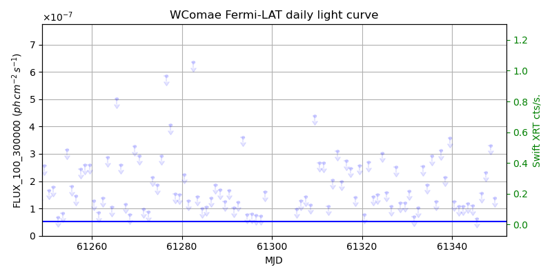
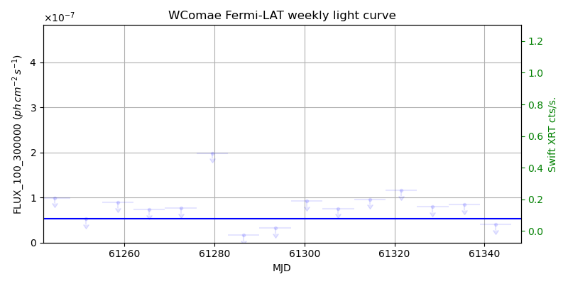
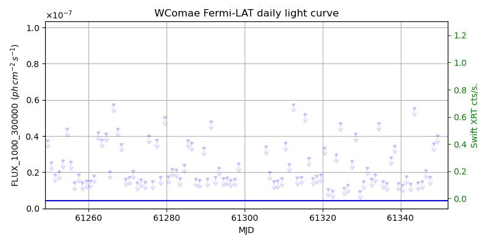
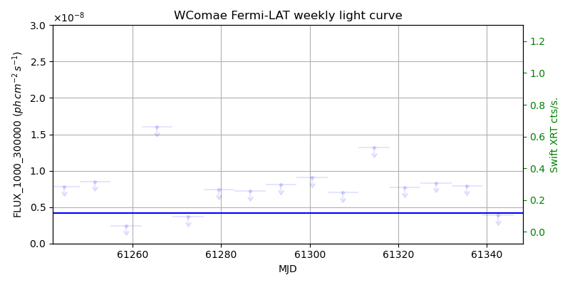

LAT Lightcurve site: https://fermi.gsfc.nasa.gov/ssc/data/access/lat/msl_lc/source/W_Comae
Swift site: https://www.swift.psu.edu/monitoring/source.php?source=WCom
NED: Query
Time of last update of this page: UT: 2026-11-06 16:24 (MJD: 61350.684)
| Property | Value |
|---|---|
| R.A. | 12:21:31.68 |
| Dec. | 28:13:58.8 |
| z | 0.102 |
| 3FGL SpectrumType | PowerLaw |
| 3FGL PL Index | 2.10 |
| 3FGL Flux_100_300000 | 5.25e-08 1 / (s cm2) |
| 3FGL Flux_1000_300000 | 4.14e-09 1 / (s cm2) |
| 3FGL Flux >200 GeV | 1.20e-11 1 / (s cm2) |
| 3FGL Extrap. Crab >200 GeV | 0.05 |
| 3FGL Flux After EBL Absorption >200GeV | 7.75e-12 1 / (s cm2) |
| 3FGL EBL Crab Fraction >200GeV | 0.03 |

| MJD | dMJD | Flux | dFlux | Frac3FGL | FracCrab>200GeV | EBLFracCrab>200GeV |
|---|---|---|---|---|---|---|
| 61345.50 | 0.50 | 6.30e-08 | 0.00e+00 | 0.00 | 0.00 | 0.00 |
| 61346.50 | 0.50 | 1.56e-07 | 0.00e+00 | 0.00 | 0.00 | 0.00 |
| 61347.50 | 0.50 | 2.33e-07 | 0.00e+00 | 0.00 | 0.00 | 0.00 |
| 61348.50 | 0.50 | 3.31e-07 | 0.00e+00 | 0.00 | 0.00 | 0.00 |
| 61349.50 | 0.50 | 1.39e-07 | 0.00e+00 | 0.00 | 0.00 | 0.00 |

| MJD | dMJD | Flux | dFlux | Frac3FGL | FracCrab>200GeV | EBLFracCrab>200GeV |
|---|---|---|---|---|---|---|
| 61314.50 | 3.50 | 9.62e-08 | 0.00e+00 | 0.00 | 0.00 | 0.00 |
| 61321.50 | 3.50 | 1.15e-07 | 0.00e+00 | 0.00 | 0.00 | 0.00 |
| 61328.50 | 3.50 | 7.96e-08 | 0.00e+00 | 0.00 | 0.00 | 0.00 |
| 61335.50 | 3.50 | 8.47e-08 | 0.00e+00 | 0.00 | 0.00 | 0.00 |
| 61342.50 | 3.50 | 4.07e-08 | 0.00e+00 | 0.00 | 0.00 | 0.00 |

| MJD | dMJD | Flux | dFlux | Frac3FGL | FracCrab>200GeV | EBLFracCrab>200GeV |
|---|---|---|---|---|---|---|
| 61345.50 | 0.50 | 1.49e-08 | 0.00e+00 | 0.00 | 0.00 | 0.00 |
| 61346.50 | 0.50 | 2.11e-08 | 0.00e+00 | 0.00 | 0.00 | 0.00 |
| 61347.50 | 0.50 | 1.74e-08 | 0.00e+00 | 0.00 | 0.00 | 0.00 |
| 61348.50 | 0.50 | 3.58e-08 | 0.00e+00 | 0.00 | 0.00 | 0.00 |
| 61349.50 | 0.50 | 4.04e-08 | 0.00e+00 | 0.00 | 0.00 | 0.00 |

| MJD | dMJD | Flux | dFlux | Frac3FGL | FracCrab>200GeV | EBLFracCrab>200GeV |
|---|---|---|---|---|---|---|
| 61314.50 | 3.50 | 1.32e-08 | 0.00e+00 | 0.00 | 0.00 | 0.00 |
| 61321.50 | 3.50 | 7.72e-09 | 0.00e+00 | 0.00 | 0.00 | 0.00 |
| 61328.50 | 3.50 | 8.32e-09 | 0.00e+00 | 0.00 | 0.00 | 0.00 |
| 61335.50 | 3.50 | 7.93e-09 | 0.00e+00 | 0.00 | 0.00 | 0.00 |
| 61342.50 | 3.50 | 3.89e-09 | 0.00e+00 | 0.00 | 0.00 | 0.00 |
--------------------------------------------------------- Using user-supplied coords: 12:21:31.68 28:13:58.8 2000 --------------------------------------------------------- FLWO UT night of: 2026-11-07 Local Sid. @ Midnight: 02:42 Sunset (-15.0) (local, UT): 18:39 01:39 Sunrise (-15.0) (local, UT): 05:36 12:36 Moonrise (local, UT): 05:16 12:16 Moonset (local, UT): Moon phase: 0.04 --------------------------------------------------------- AzTime LSID UT Obj_el Obj_az Mn_el Mn_az Sep. --------------------------------------------------------- 18:39 21:20 01:39 -16.1 319.0 -35.5 278.9 40.6 19:09 21:50 02:09 -20.1 324.6 -41.6 283.5 40.7 19:39 22:20 02:39 -23.5 330.7 -47.5 288.8 40.9 20:09 22:50 03:09 -26.3 337.3 -53.3 295.3 41.1 20:39 23:20 03:39 -28.4 344.4 -58.7 303.4 41.3 21:09 23:50 04:09 -29.8 351.8 -63.5 313.9 41.5 21:39 00:20 04:39 -30.2 359.5 -67.5 328.0 41.6 22:09 00:50 05:09 -29.9 7.1 -70.0 346.2 41.8 22:39 01:20 05:39 -28.7 14.6 -70.5 6.9 42.0 23:09 01:51 06:09 -26.7 21.7 -68.8 26.6 42.2 23:39 02:21 06:39 -23.9 28.4 -65.4 42.5 42.4 00:09 02:51 07:09 -20.6 34.6 -60.9 54.4 42.7 00:39 03:21 07:39 -16.7 40.3 -55.8 63.5 42.9 01:09 03:51 08:09 -12.3 45.5 -50.2 70.6 43.1 01:39 04:21 08:39 -7.6 50.2 -44.4 76.4 43.3 02:09 04:51 09:09 -1.5 54.5 -38.4 81.4 43.5 02:39 05:21 09:39 3.0 58.4 -32.4 85.8 43.7 03:09 05:51 10:09 8.5 62.1 -26.3 89.9 44.0 03:39 06:21 10:39 14.2 65.5 -20.2 93.7 44.2 04:09 06:51 11:09 20.0 68.6 -14.2 97.5 44.4 04:39 07:21 11:39 26.0 71.7 -8.1 101.2 44.6 05:09 07:52 12:09 32.2 74.6 -1.2 105.0 44.8 05:36 08:19 12:36 37.8 77.2 3.4 108.6 45.0 --------------------------------------------------------- Dark hours >55 deg.: 0.00